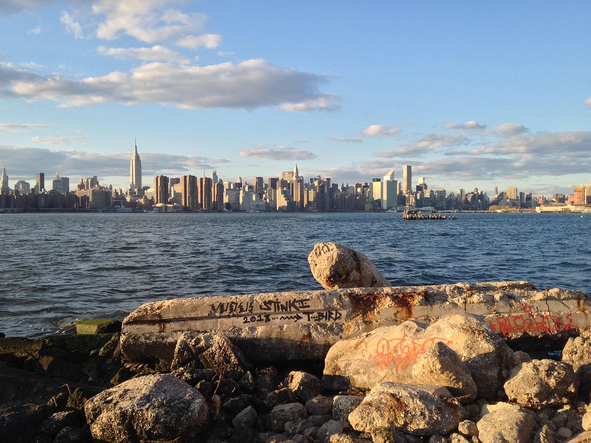
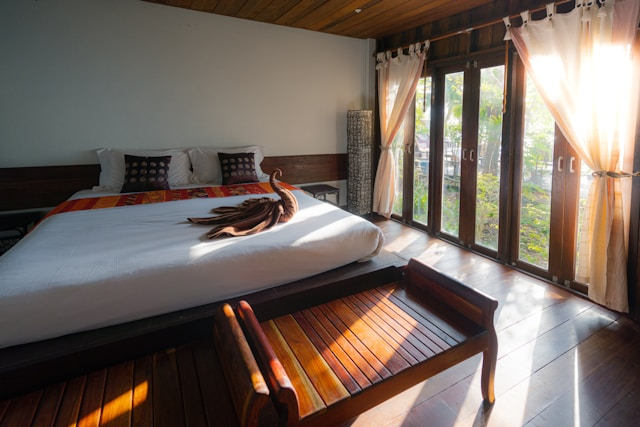
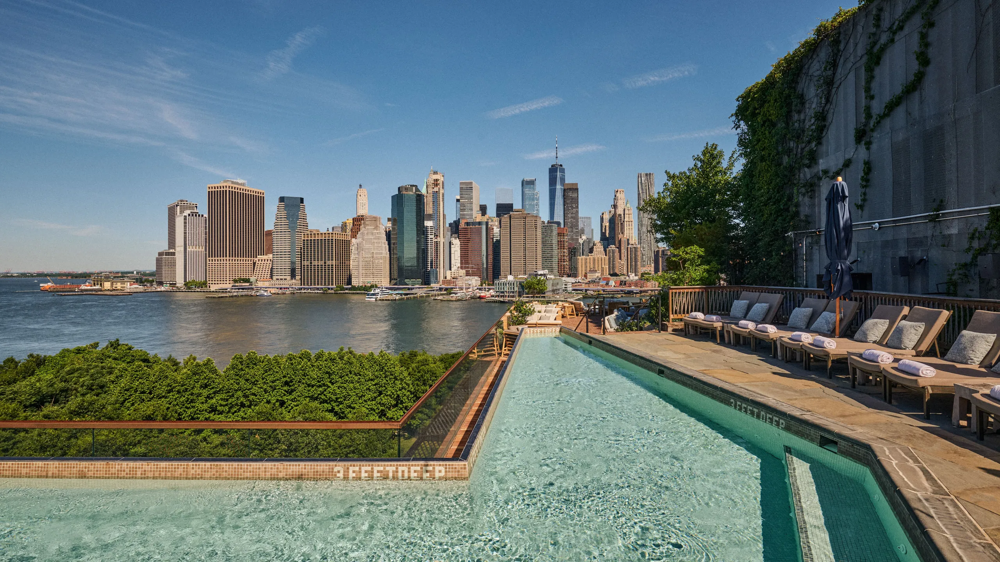
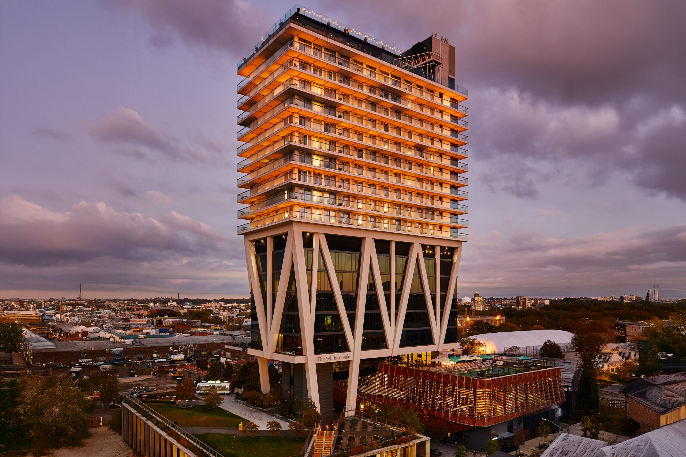
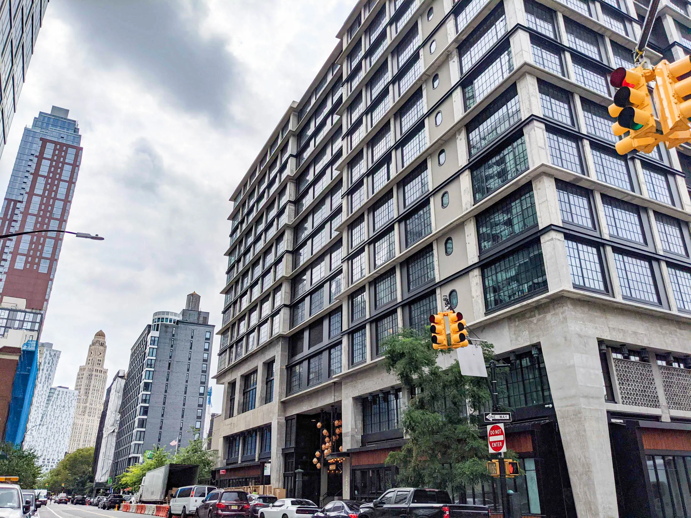
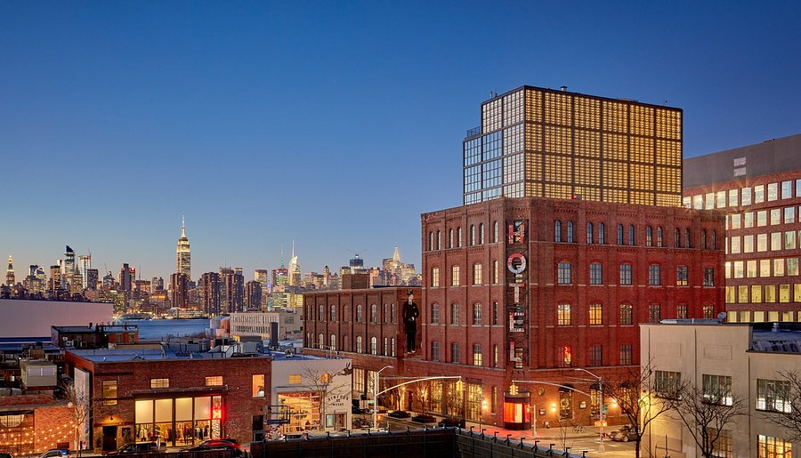

Explore Brooklyn
Discover Brooklyn, One Neighborhood at a Time
Explore Brooklyn's waterfront parks, distinctive neighborhoods, local cafés, and creative culture while experiencing a different side of New York City.
Explore Brooklyn's waterfront parks, distinctive neighborhoods, local cafés, and creative culture while experiencing a different side of New York City.
A stay at Waylanes Hotel puts you within easy reach of the places that make Brooklyn one of New York City's most distinctive boroughs. Spend your day exploring tree-lined streets, lively waterfront areas, local markets, independent cafés, and neighborhoods that blend historic character with contemporary culture.
Watch the sunset over the Manhattan skyline from Brooklyn Bridge Park, discover the galleries and converted warehouses of DUMBO, or take your time exploring the unique atmosphere of Williamsburg. After a day of sightseeing, return to a welcoming space designed for comfort, relaxation, and a memorable stay in Brooklyn.


From scenic waterfront parks to creative neighborhoods and historic streets, Brooklyn offers a side of New York that feels both energetic and authentic. Explore some of the borough's well-known hotels and nearby attractions during your visit.

Set beside Brooklyn Bridge Park, 1 Hotel Brooklyn Bridge combines contemporary design with sweeping views of the Manhattan skyline and East River. Its location makes it easy to explore DUMBO, enjoy waterfront walks, or simply relax while taking in one of New York City's most recognizable skylines.
Reserve Your Stay
Located in Williamsburg, The William Vale is known for its modern architecture, spacious guest rooms, and elevated views across Brooklyn and Manhattan. Surrounded by independent boutiques, cafés, music venues, and local restaurants, it places visitors in one of Brooklyn's most creative neighborhoods.
Book Your Room
Found near Downtown Brooklyn, Ace Hotel Brooklyn offers a welcoming atmosphere inspired by the borough's artistic spirit. Its central location provides convenient access to cultural venues, shopping districts, and nearby neighborhoods, making it a comfortable base for both business and leisure travelers.
Explore More
Housed in a restored industrial building in Williamsburg, Wythe Hotel reflects Brooklyn's history while offering modern comforts. Guests are just a short walk from the East River waterfront, local galleries, neighborhood cafés, and some of the area's best-known dining spots.
Discover BrooklynDiscover a borough where historic brownstones, vibrant waterfronts, independent cafés, and creative neighborhoods come together to create a truly memorable New York experience. Whether you're planning a relaxing getaway, a business trip, or a weekend of exploring, Waylanes Hotel offers a comfortable place to unwind while keeping Brooklyn's most loved destinations within easy reach.